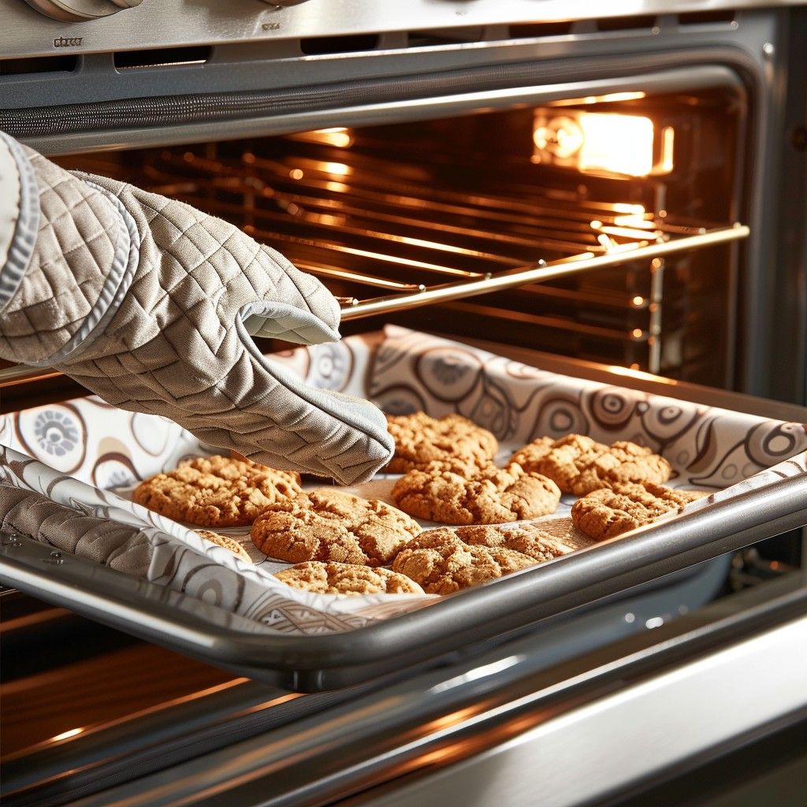

Oven Controller
New Zealand's flagship home applicances manufacturer has been designing products since 1934 and has
grown into a global company with products sold in more than 50 countries around the world. Providing
top of the range kitchen and laundry products to discerning cunsumers, it is not unusual to find their
brand name on display in high end New York and London apartments as well as many NZ households.
Working in the kitchen research and development labs I was allowed the freedom to implement software for
several experimental oven designs including a drawer oven and platform motor. We finally settled upon
a facelift 90cm wall mounted pyrolitic self cleaning oven with full LED graphical display
I implemented the software architecture for a new Renesas-based platform complete with multi-processor
control of GUI and PID element temperature management of the oven cavity based on food type and cooking function.
This was a very exciting project for me and being able to see the final product on display at NZ retail
outlets gives me quite the sense of achievement on behalf of myself and the team that followed me.